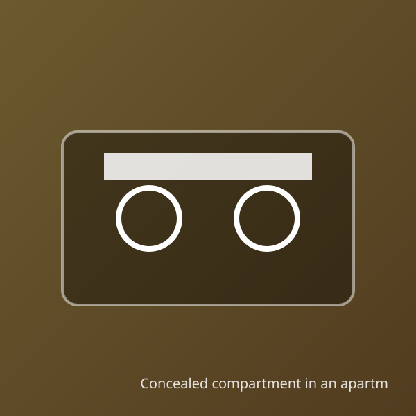

Copacabana clandestine cassette compilation (“A FITA”), 17-track Latin American protest programme

Background: # IM-043 — The Copacabana clandestine cassette compilation (“A FITA”), Rio de Janeiro, c.1975
Where and when: Concealed compartment in an apartment possibly used as a clandestine opposition safehouse; Copacabana, Rio de Janeiro, Brazil; Date(s): Probably c.1975 (inferred from newest identified track); found 1984; Medium: 50 identical unbranded cassettes reported; one cassette later digitised to CD